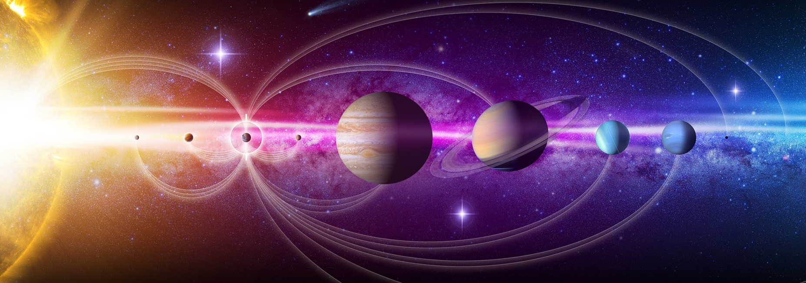

Why is it Called the Solar System?
Why is it Called the Solar System? There are many planetary systems like ours in the universe, with planets orbiting a host star. Our planetary system is called “the solar system” because we use the word “solar” to describe things related to our star, after the Latin word for Sun, "solis."

Our planetary system is located in an outer spiral arm of the Milky Way galaxy.
Our solar system consists of our star, the Sun, and everything bound to it by gravity – the planets Mercury, Venus, Earth, Mars, Jupiter, Saturn, Uranus, and Neptune; dwarf planets such as Pluto; dozens of moons; and millions of asteroids, comets, and meteoroids. Beyond our own solar system, we have discovered thousands of planetary systems orbiting other stars in the Milky Way.